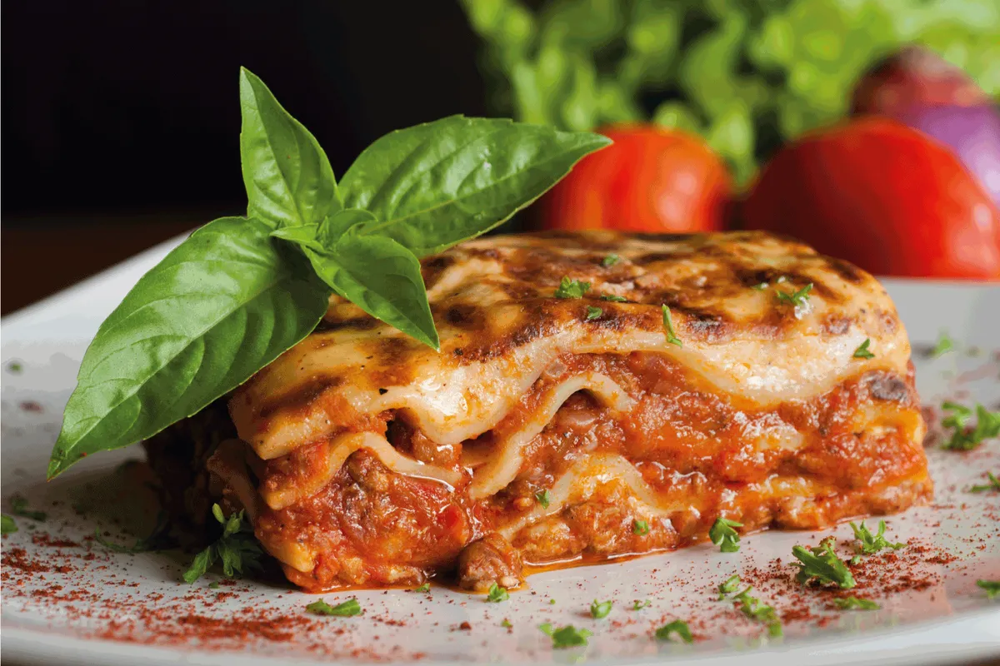

Description:
A nice recipe for amazing fully home-made lasagna.
Ingredients:
- Parmesan cheese
- Emental cheese (optional)
- Dry mozzarella cheese
- Fresh Bolognese sauce or about 1 litre worth of store-bought sauce
- Béchamel sauce or ricotta lasagna filling
- Lasagna pasta sheets
Steps:
- Prepare the bolognese or jared pasta sauce.
- When the sauce is almost done cooking prepare your béchamel or ricotta filling.
- If you want you can add 3-4 handfuls of grated emental cheese to the béchamel.
- If necessary, boil the lasagna noodles following the instructions on the packaging, start preheating your oven to 175°C/350°F.
- Spread a thin layer of pasta sauce on the bottom of a large, deep baking tray.
- Cover with lasagna sheets and spread a layer of béchamel sauce or ricotta, cover with lasagna sheets and spread a layer of pasta sauce if you want you can finely grate a little bit of parmesan on each layer of bolognese.
- Rinse and repeat the previous step until the tray is nearly full or you are running low on béchamel sauce/ricotta filling, take care that the last layer should be bechamel or ricotta.
- Grate some parmesan on top of your final layer and cover with Dry mozzarella cheese, wrap the top in aluminum foil.
- Place the tray in the centre of your pre-heated oven and let it cook for 30-35 minutes, after that remove the foil to let the top brown.
- Once it is done cooking take it out of the oven and cover again with aluminum foil, let it rest for 10 minutes before serving.